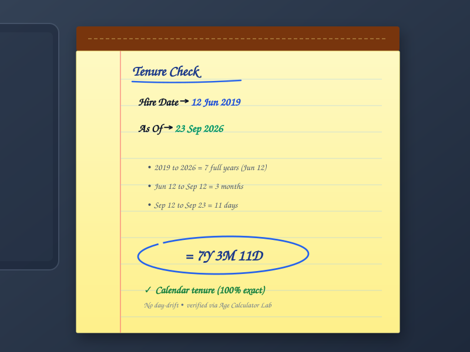
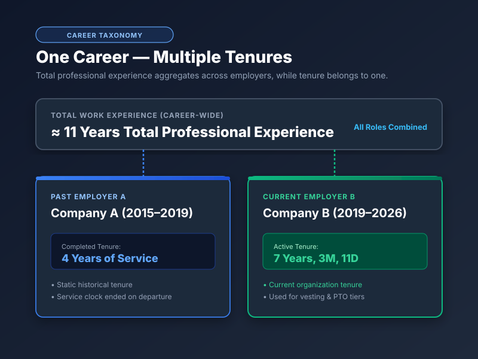
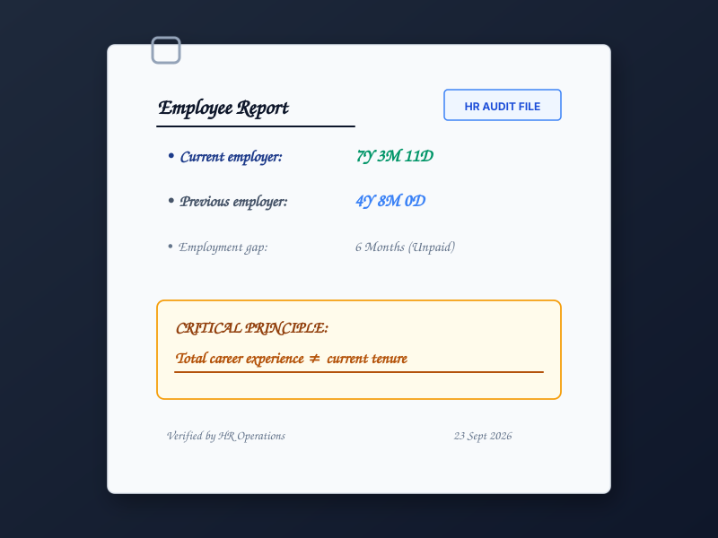
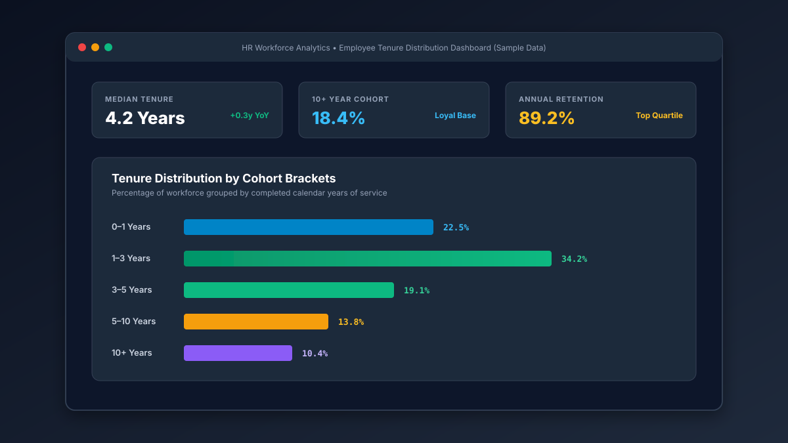

Employee Tenure Formula
At its core, calculating employee tenure is a chronological interval subtraction. The fundamental relationship is expressed as:
For a calendar-based result, the difference is decomposed into completed full years, remaining calendar months, and remaining elapsed days.
Unlike simple numerical subtraction (such as subtracting two Unix timestamps), accurate workplace tenure requires calendar-aware decomposition. Because calendar years contain either 365 or 366 days, and calendar months vary from 28 to 31 days, tenure cannot be represented accurately by a static division formula.
Which Date Should You Use to Calculate Employee Tenure?
When reviewing employment agreements, payroll systems, and corporate HR databases, you will encounter multiple date labels. Understanding how these terms interact is vital:
| Term | Common HR Usage | Impact on Tenure Calculation |
|---|---|---|
| Start Date | The day employment or physical service officially commences. | The universal benchmark used for day-to-day tenure calculations. |
| Hire Date | The date the formal employment offer was accepted or processed. | Often identical to start date; if different, service usually starts on first working day. |
| Joining Date | The day an employee physically or virtually reports for duty. | Commonly used in multinational and Indian HR environments as the primary service start. |
| Employment Date | General administrative date recorded on payroll files. | Serves as the baseline for corporate tenure when specific start logs are absent. |
| Service Start Date | Contractual commencement date defined for a specific benefit plan. | Determines credited qualifying service under pension, vesting, or severance schemes. |
Expert Rule: While these terms often refer to the exact same date in standard employment settings, an employer's formal records or applicable benefit policy should always dictate which date is entered for formal statutory or severance calculations.

How to Calculate Tenure for a Current Employee
Calculating tenure for an active, currently employed team member is the most common workplace use case. The calculation path is:
Because active tenure is dynamic, the number of completed days advances automatically every morning at midnight. For example, if an employee joined on June 12, 2019, their tenure evaluated on September 23, 2026 is 7 Years, 3 Months, and 11 Days. When evaluated tomorrow, it will be 7 Years, 3 Months, and 12 Days.
Calculate Your Current Employee Tenure →
How to Calculate Tenure for a Former Employee
For an employee who has separated from the organization, tenure becomes a locked, historical duration. The calculation formula is:
When determining the end date for a former employee:
- Use the official termination, resignation, or contract end date specified in HR settlement records.
- Note that an employee's last physical working day may differ from their official contractual end date if accrued unused paid time off (PTO) or garden leave extends their payroll termination date.
How to Calculate Employee Tenure on a Future Date
Workforce planners, department managers, and employees frequently need to look ahead: “How much tenure will this engineer have when our project finishes on December 31, 2028?” or “On what exact date will this manager achieve 10 years of service?”
By setting the reference date to a future target point, you can project:
- Upcoming Milestone Anniversaries: Pinpoint the exact date an employee achieves their 5th, 10th, or 20th year of service.
- Retirement Eligibility: Calculate whether an employee will satisfy minimum service tenure thresholds on their planned retirement date.
- Equity & Pension Vesting: Project exact vesting dates for corporate stock options or statutory gratuity.
Interactive Tenure Date Selector
How Should Employee Tenure Be Reported?
Employee tenure can be presented in five distinct numerical and calendar formats, each serving a different administrative or reporting purpose:
Why You Shouldn't Simply Divide Days by 365
A frequent shortcut in spreadsheet formulas is dividing total elapsed days by 365. While this produces a floating-point decimal, it does not produce accurate calendar years, months, and days:
- Variable Month Lengths: Months contain 28, 29, 30, or 31 days. A month is never a static 30.416 days.
- Leap Years Insert Extra Days: Every fourth year introduces February 29. Dividing elapsed days by 365 artificially creates extra decimal fractions that do not correspond to calendar anniversaries.
- Anniversaries Belong to Specific Dates: An employee who started on June 12 celebrates their 1st anniversary on June 12 of the following year, not on Day 365.
To explore the exact arithmetic borrowing rules that prevent calendar drift, review our in-depth tutorial on how to calculate years of service in years, months, and days.
Employee Tenure Calculation Example
Let us trace a real-world calculation from hire date to reference date:
- Employee Start Date: June 12, 2019
- Evaluation Reference Date: September 23, 2026
Is Employee Tenure the Same as Years of Service?
In common workplace parlance, the terms overlap significantly. However, they carry distinct semantic emphases:
- Employee Tenure: Primarily emphasizes the retention duration of an individual within an organization (how long they have stayed with their current company).
- Years of Service: Can refer more broadly to cumulative time served across specific employment arrangements, corporate programs, or military and civil service rosters.
- Qualifying Service: The formal subset of service credited for pensions, statutory gratuity, or retirement eligibility under specific rules.
For a comprehensive guide to corporate terminology and policy differences, see our foundational article: What Is Years of Service? Meaning, Tenure & Length of Employment.
Tenure Is Not the Same as Total Work Experience
A common mistake made by professionals on resumes and job applications is conflating tenure with aggregate career experience. Consider an employee with the following background:
- Company A (2015–2019): 4 Years of Service
- Company B (2019–2026): 7 Years of Service
Total Career Work Experience = ≈ 11 Years • Current Tenure at Company B = 7 Years

How Do Employment Gaps Affect Employee Tenure?
When an employee experiences a career gap, unpaid sabbatical, or leaves an organization and is later rehired, a fundamental distinction arises:
Whether past service bridges across an employment gap depends entirely on your employer's written rehire policy, collective bargaining agreement, or statutory guidelines (such as statutory bridging for military service or family leave).
Can Employee Tenure Include Multiple Service Periods?
A standard tenure calculation measures a single start-to-end interval. If an organization's policy allows multiple separate employment terms to be combined, each period must be calculated independently:
- Calculate completed years, months, and days for Period 1.
- Calculate completed years, months, and days for Period 2.
- Sum the components, carrying over excess days (converting every 30/31 days into a full month) and excess months (converting every 12 months into a full year).
Important Distinction: Unless formal HR policy explicitly credits prior service, corporate databases will report your tenure as your uninterrupted continuous service from your latest rehire date.

How Do Leap Years and Month Lengths Affect Employee Tenure?
Gregorian calendar years contain either 365 days (common years) or 366 days (leap years). Month lengths also fluctuate between 28, 29, 30, and 31 days.
Under calendar-anniversary decomposition, leap years do not alter your completed anniversary date. If you started on June 12, 2019, your 7th anniversary falls on June 12, 2026 regardless of the fact that two leap years (2020 and 2024) occurred during that span.
What Happens If an Employee Starts on February 29?
Employees hired on Leap Day (February 29) introduce an interesting calendar condition during the three non-leap years that follow:
- March 1 Convention: Most corporate payroll systems recognize the anniversary on March 1 (the 366th day after the start date).
- February 28 Convention: Some workplace social recognition portals celebrate on the final day of February.
Neither convention affects completed years: on either February 28 or March 1, the employee successfully locks in their full year of tenure.
Does Employee Tenure Determine Benefits?
Not automatically. While calendar tenure dictates milestone celebrations, service awards, and annual PTO bracket increases, statutory benefits depend on formal qualifying service rules:
A date-based tenure calculation measures calendar duration. It does not constitute a legal or actuarial determination of pension vesting, statutory severance, or gratuity entitlements. Benefit administrators often exclude unpaid leaves or mandate minimum annual hours (such as the 1,000-hour ERISA rule in the United States). Always verify benefit eligibility with your official plan administrator.
When Is Employee Tenure Useful?
Tracking employee tenure accurately is essential across six distinct organizational domains:
1. Employee Profiles
Displaying exact duration of employment on internal directories, LinkedIn profiles, and resumes.
2. HR Operations & Audits
Generating organizational tenure distribution reports and tracking turnover metrics.
3. Work Anniversaries
Automating annual anniversary notifications for managers and team celebrations.
4. Service Recognition
Identifying employees approaching 5, 10, 15, or 20-year milestone awards and sabbaticals.
5. Workforce Analytics
Benchmarking average employee tenure across departments, cohorts, and leadership levels.
6. Retirement Projections
Calculating exact service duration projected to a future retirement or early exit cutoff.

Calculate Employee Tenure From Any Start Date
Enter any hire date and reference date to get an instant, calendar-accurate breakdown in completed years, months, and days with zero leap-year drift.
Calculate Employee Tenure Now →Common Employee Tenure Calculation Mistakes
Calculating tenure using the current date rather than the employee's official last working day.
Entering the date an offer letter was signed rather than the official first day of active service.
Reporting overall career length instead of duration with the current organization.
Treating separated terms as uninterrupted continuous tenure without verifying company bridging rules.
Using raw day division, which drifts out of alignment due to 366-day leap years and variable month lengths.
Assuming 7.28 decimal years equals 7 years and 28 days (0.28 years is approximately 3.3 months).
Assuming that calendar tenure automatically qualifies an employee for pensions without satisfying plan hours.
Overlooking contractual definitions of probation periods, rehire clocks, or merger service credits.
Employee Tenure FAQs
How do I calculate employee tenure?
To calculate employee tenure, take the employee's official start date and measure the elapsed calendar difference up to the reference date (such as today or a termination date). Decompose this interval into completed calendar years, remaining whole months, and remaining days.
How do I calculate tenure from a hire date?
Identify the hire date on the employee's record, set the reference date to today (or the last working day), and calculate the completed full years between the two dates. Then count the remaining whole months and leftover days.
How do I calculate employee tenure from a start date?
Subtract the start date from the reference date using calendar decomposition. First count completed annual anniversaries, then the months elapsed past the last anniversary, and finally the days elapsed past the last full month.
What is employee tenure?
Employee tenure is the length of time an employee has been continuously employed with a specific organization, typically expressed in years, months, and days.
Is employee tenure the same as years of service?
In general HR terminology, employee tenure and years of service are largely synonymous. However, employee tenure often emphasizes continuous retention with one employer, whereas years of service can refer more broadly to service within a program or arrangement.
Is employee tenure the same as work experience?
No. Employee tenure measures time spent with your current employer. Work experience measures your aggregate career length across all employers, jobs, and roles combined.
How do I calculate tenure for a former employee?
Use their official start date as the beginning and their last applicable service date (resignation, termination, or retirement date) as the reference date. Calculate the completed years, months, and days between those two fixed dates.
Can I calculate employee tenure as of a future date?
Yes. By choosing a future reference date (such as a projected retirement date or milestone anniversary), you can calculate exactly how many years, months, and days of tenure the employee will have accumulated by that future date.
How do employment gaps affect tenure?
An employment gap or separation usually resets continuous tenure to the employee's rehire date. However, company bridging policies or statutory rules may allow multiple distinct service periods to be combined into total employment history.
Can multiple employment periods be combined?
Yes, if employer policy permits service bridging. Each individual employment period is calculated separately in years, months, and days, and then combined according to applicable corporate or pension aggregation rules.
How do leap years affect employee tenure?
Leap years contain 366 days instead of 365. Calendar decomposition preserves exact anniversary dates regardless of leap years, avoiding the artificial 1-to-2 day drift created by simply dividing total days by 365.
What if the employee started on February 29?
For employees hired on February 29 during a leap year, standard HR convention recognizes their non-leap-year anniversary on March 1 (or February 28 under some company policies). In both cases, completed full years advance on the anniversary date.
Does employee tenure determine benefits?
Not automatically. While tenure influences milestone recognition and PTO tiers, formal pension vesting, gratuity, and severance benefits depend on formal qualifying service rules, which may exclude unpaid leaves or require minimum annual hours.
What is the easiest way to calculate employee tenure?
The easiest way is to use the free Years of Service & Employee Tenure Calculator on Age Calculator Lab, which instantly computes exact calendar years, months, days, total months, and decimal years from any hire date.
Related Tools & Practical Guides
Years of Service Calculator
Calculate exact employee tenure, completed years, months, days, and milestone countdowns.
Calculation GuideHow to Calculate Years of Service
Step-by-step arithmetic tutorial on calendar decomposition, day borrowing, and Excel formulas.
Foundational GuideWhat Is Years of Service?
Learn the difference between calendar tenure vs. qualifying service, milestones, and career experience.
Anniversary GuideHow to Calculate Your Work Anniversary
Find your next anniversary date, countdown days, and plan for 1, 5, 10, and 20-year career milestones.